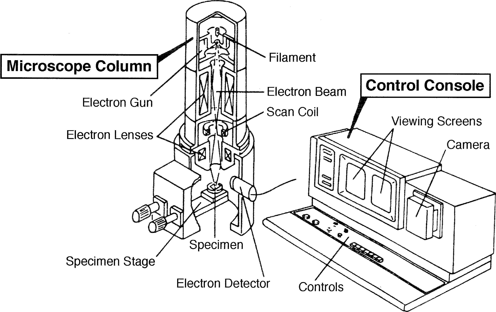
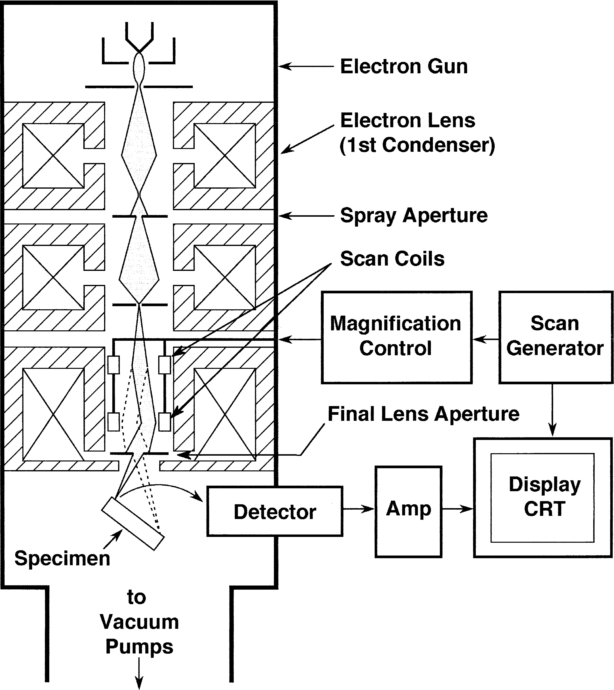
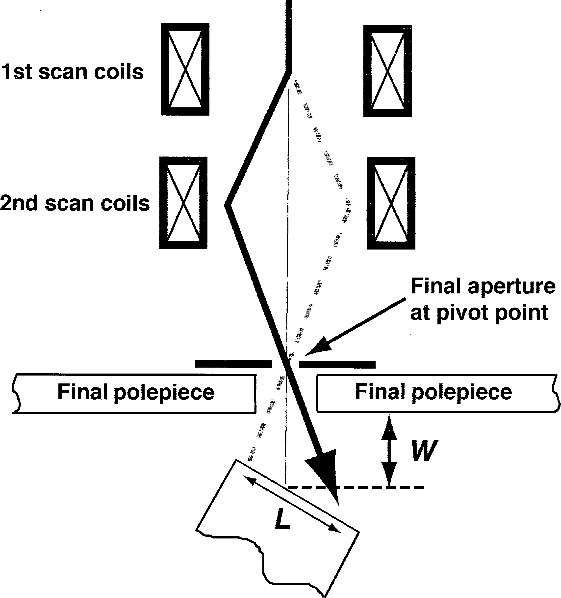
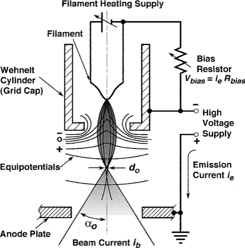
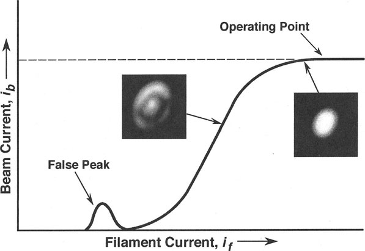
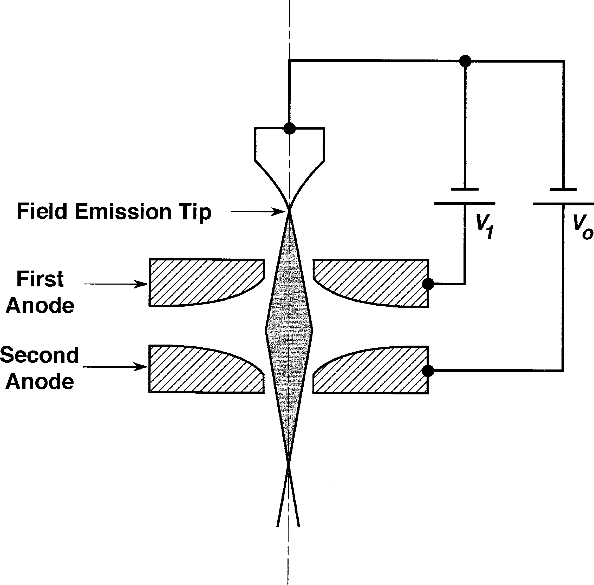
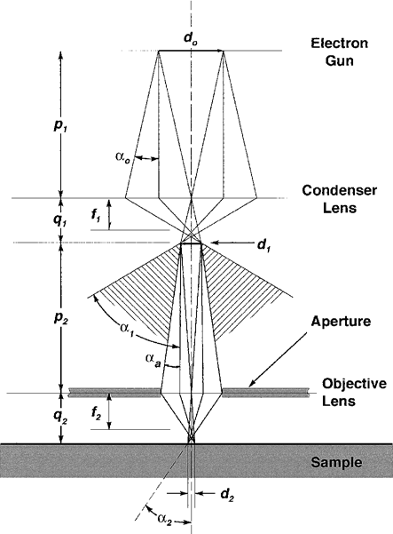
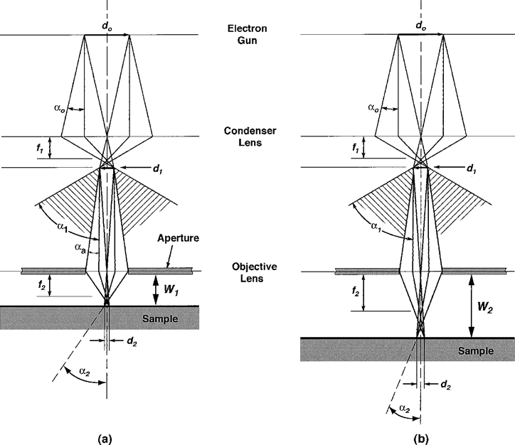
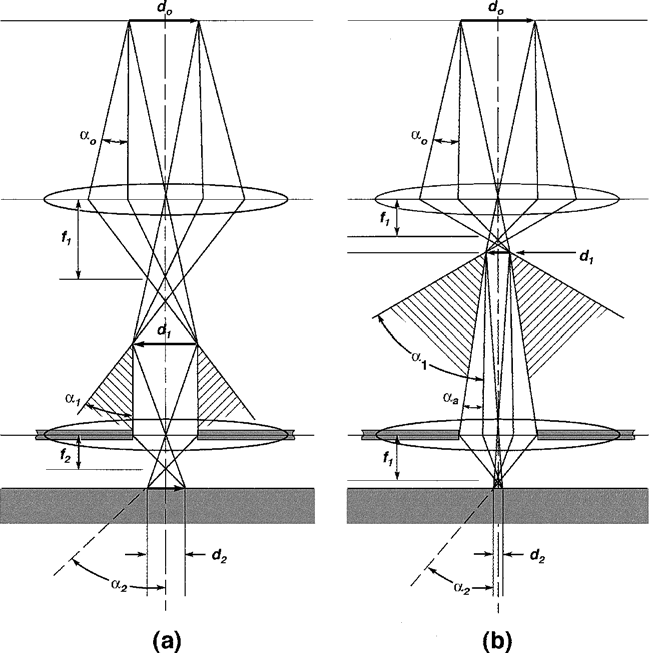

扫描电镜及其工作模式
SEM工作原理
各部件功能

- 镜筒electron column
- Electron Gun电子枪
- Filament灯丝
- Scan Coil扫描线圈
- Electron Lenses电磁透镜
- Specimen Stage样品台
- Electron Detector探测器
- Electron Gun电子枪
- 控制台control console
- 控制按钮
- 显示器
- 相机
产生小电子束
电子枪产生电子，加速到0.1~30keV。电磁透镜将束斑会聚到10 nm内的小尺寸。电子束最终作用到样品表面1微米深度内，产生信号。
偏转放大控制系统
扫描图像由一个个点构成，系统通过偏转线圈操控电子束在样品表面逐行扫描，与显示器CRT上的扫描同步。放大倍数为二者扫描步长之比，需要增大放大倍数时只需降低偏转线圈电流即可。

偏转控制系统。扫描生成器生成扫描的栅格，分别交给扫描线圈及显示器CRT。放大系统控制偏转线圈电流以控制放大倍数；探测器产生的信号经放大后交给CRT电子枪，控制发射强度。
（这东西现在应该已经被数字化了吧）

扫描线圈的工作原理：第一组偏转线圈令电子束偏离光轴，第二组再令电子束偏回来，与光轴重新相交的点称为中轴点(pivot point)。实际的放大倍数还与样品到中轴点的工作距离W有关，现代电镜可以实现自动校正放大倍数。
探测器收集信号
电子束作用到样品上会产生各种各样的信号，信号强度与扫描点位相关联即可得到图像。最常用的信号是secondary electron二次电子SE和backscattered electron背散射电子BSE。标准Everhart-Thornley（E-T）探测器两种信号都能收集。
在探测器前的收集屏上施加正偏压可以同时收集到SE和BSE，施加负偏压则可以收集到纯BSE信号，这是由于SE的能量较低，会被挡出。电子由闪烁计数器或光电倍增管转成电信号，传给下一级系统。
相机与计算机系统
（都什么年代了，还在用传统SEM）
操作控制
- 控制电子枪的加速电压和电流强度
- 控制聚光镜，决定电子束的强度和最小束斑尺寸
- 控制物镜在样品上对焦
- 调整图像的衬度、亮度
SEM成像模式
SEM提供多种成像模式，以适应不同信息。主要的四个参数：
- 束斑尺寸 \(d_p\)：对应分辨率模式resolution mode
- 束斑电流 \(i_p\)：对应高电流模式high-current mode
- 束斑会聚角 \(\alpha_p\)：对应焦深模式depth-of-focus mode
- 加速电压 \(V_0\)：对应低压模式low-voltage mode

分辨率模式
束斑尺寸需要足够小以确保高分辨率，为获得足够的衬度，需要相应增大电流。为获得样品表面细节，束斑尺寸应与其尺度相当。分辨率模式只在高倍下（10000x以上）有意义。
高电流模式
受噪声影响，样品的某些特征有时即便采用小束斑也无法得到良好衬度，此时增大电流以获得更高信号强度，从而获得更好的衬度。
另外，当需要收集X射线信号时，往往也需要增大电流以提高X射线信号强度。
焦深模式
会聚角越小，焦深越好。小会聚角有利于不同深度样品的观察。
这个是景深吧，为啥写的是depth of focus
低电压模式
低电压（< 5 kV）下，电子束与样品作用的范围基本限于近表面区域。因此低电压图像能获得更多的表面细节，相比之下高电压（15-30 kV）图像包含了样品内部信息
为什么需要了解电子光学
不如说是：为什么需要了解以上几种模式的优点，难道我们不能直接把电镜设置成同时具备以上所有优点吗？
以上参数的设置有些是互斥的。例如：小束斑和小会聚角不可避免地会降低电流；低电压下，束斑尺寸增大，电流也会降低。因此，我们需要了解各项参数、模式的意义及其对应的使用条件，从而灵活选择操作模式，获得更好的电镜照片。
电子枪
电子枪为电镜提供能量可变的稳定束流。
- 热发射枪：钨灯丝、LaB6灯丝
- 场发射枪：冷场发射、热场发射、Schottky场发射
发夹式钨电子枪
由以下三部分构成
- 钨灯丝阴极
- 控制极Wehnelt
- 阳极
电压为阴极阳极的电位差，在0.1~30kV范围内可调。阳极接地，控制极施加负偏压（比阴极还负一点点），用于聚焦电子束。

灯丝Filament
（尽管钨灯丝已经有70多年的历史~~算到现在应该更久了吧~~，但还在用）
灯丝直径约为100 um，弯折成像发夹的V形，针尖半径约100 um。
灯丝处于白热状态时产生明显束流，为此为灯丝施加电流，加热到2000-2700K。电子束在针尖100×150 um的区域产生。
控制极 Grid Cap
又称为Wehnelt cylinder。电子束在灯丝尖端产生时成锥面放射，在控制极负偏压作用下会聚。
阳极 Anode
阳极开孔，容许一部分的电子通过。
发射电流与电子束流
-
发射电流emission current是从灯丝产生的全部稳定电流；
-
电子束流beam current为离开电子枪、进入镜筒的电流；
- 束斑电流probe current为经过透镜、光阑，最终落到样品上的电流。
电子枪的控制
为保证束斑电流的稳定性，需要将灯丝电流加到饱和，以使束流受灯丝电流的影响较小。另外，处于饱和状态时，电子束均从灯丝的尖端发出，束斑的尺寸最小。

电子枪的性质
主要包括以下几项：
- 发射电流强度
- 亮度
- 寿命
- 源尺寸
- 能量分布
- 稳定性
其中，亮度最为重要，关乎图像质量，尤其是在高倍下。
发射电流
钨灯丝的发射电流约为100uA，场发射枪的发射电流约为10-30uA。但由于发射电流只有一部分进入镜筒，其余被阳极光阑挡住，加之后续的透镜、光阑都会影响实际作用的电流强度，因此该指标不能很好地评估电子枪性能。
亮度
电子光学亮度\(\beta\)由单位面积单位立体角上的电流强度定义：
\(i_p\)：束斑电流
\(\alpha_p\)：束流会聚角
\(d_p\)：束斑尺寸（直径）
亮度可以通过实验测算。由于透镜的像差，测得的亮度低于实际亮度。通常，电子枪的亮度与加速电压成线性关系。
寿命
热发射枪会烧断。
光源大小、能量分布、稳定性
| 钨灯丝 | LaB6 | 场发射 | |
|---|---|---|---|
| 光源大小\(d_0\) | 50 um | 5 um | 5-25 nm |
| 能量分布\(\Delta E\) | 3.0 eV | 1.5 eV | 0.3-0.7 eV |
关于稳定性，Schottky场发射枪最好，热发射枪次之，冷场发射最差。
提升电子枪性能
需要在不降低束斑电流的同时减小束斑尺寸，即提升电子枪的亮度。
- 换灯丝LaB6
- 改用场发射
LaB6电子枪
感觉原理上差不多，就是把W灯丝换成LaB6晶体。比钨灯丝贵，但更好用。
- 5-10倍亮度，更长寿命
- 功函数低
- 直径100 um、长0.5 mm的小单晶
- 用石墨或铼作为电阻加热
- 针尖直径约为1um
- 需要10e-4以下的真空，因此需要离子泵
- 20 keV下亮度在5e5~5e6 A/cm2 sr之间，取决于针尖尖锐程度。越尖越亮，也越容易坏。
- 虽然比钨灯丝贵，但也比钨灯丝耐用。
- LaB6没有饱和点，一般是手动缓慢升温至灯丝像形成良好的盘状。
- LaB6容易污染，一般缓慢升温自清洁。厂商建议不用的时候也保持低温运行以减小热冲击，提高真空度，延长寿命。
场发射枪
热发射枪利用温度令电子克服材料的功函数，场发射枪则主要利用外加电场。热发射枪便宜、真空要求低，但同时也存在亮度低、寿命短、能量波动大等问题。场发射枪可以解决这些问题。
场发射枪的针尖约100 nm，通常焊在钨灯丝上，电流密度可达1e5 A/cm2，相比之下热发射枪光源的电流密度仅约3 A/cm2。

场发射枪包含2类。
-
冷场发射（CFE）
只依赖电场令电子枪发射电子。产生电子的区域直径仅有几纳米，角度范围也较小。尽管总电流较小（1-10 uA），但光源亮度大，20kV达1e8 A/cm2 sr。
电子枪有2个阳极。第一个阳极负责产生电子，第二个阳极负责加速电子。第二个阳极与阴极的电压才是加速电压的大小。第二阳极接地。 \(V_1/V_0\) 决定电子枪的焦点，可以电脑控制。
冷场发射枪要求阴极针尖表面原子级洁净，1e-5 Pa级别的真空仍然会有气体分子吸附，需要1e-8~1e-9级别。气体吸附会影响电子发射。使用针尖前将针尖加热到约2500 K以清洁表面，但会对针尖形成损耗，大约每天1次。总体上针尖具有很长的寿命。
-
Schottky场发射（SFE）与热场发射（TFE）
TFE与CFE类似，区别仅在温度。甚至可以降温当CFE用。升温有利于针尖洁净，降低了真空要求，提升了稳定性。（但同时也降低了使用寿命）
SFE在针尖表面覆盖低功函数的材料。因此，尽管SFE是热发射，其亮度和电流密度能与CFE相匹敌。灯丝约12~15个月更换一次，SFE对真空度要求不如CFE，但高真空有利于提高稳定性，防止ZrO2阴极中毒，增加亮度。
TFE光源大小与CFE相当，但SFE光源略大（因为针尖大）。SFE由于温度高，能量波动大于CFE。SFE优点在于电流输出高，连续工作时间长，稳定性好。
电磁透镜系统
透镜系统用于将交叉点处的电子光源进一步缩小到样品上的10 nm量级。透镜包括静电透镜与电磁透镜，电磁透镜的像差小，因此在SEM中基本都是电磁透镜。
缩小电子束尺寸
一般而言有 $$ f\propto\frac{V_0}{(NI)^2} $$
放大/缩小倍数为p与q的比值。
SEM中的透镜系统
会聚镜Condenser Lenses
用于缩小电子束，一般有1~3个，由系统统一控制，调整束斑尺寸spot size。
物镜Objective Lenses
将光束聚焦到样品上，顺便提供一点点的缩小
物镜光阑有2种，分为Real Aperture与Virtual Aperture。前者位于透镜中，真空度较低，容易被污染；后者位于透镜外部，不易污染，且与前者等效。
透镜控制

可供操作者调整的仪器参数主要为：
- 物镜光阑大小
- 样品高度\(z\)
- 聚光镜C1电流
光阑尺寸的影响
物镜光阑将会聚镜会聚后、发散角为\(\alpha_1\)的电子束限制在\(\alpha_a\)内，再被物镜会聚。调节光阑尺寸的作用主要有以下三点：
- 调整到最佳孔径角有利于降低像差的不利影响；
- 调整图像的焦深
- 调整最终束斑的电流，因为光阑隔除了光阑孔径角外的散射电子。
工作距离的影响
工作距离的调整需要调整样品台高度\(z\)，再重新对焦。工作距离的改变会连带影响一系列参数，包括（以增加工作距离W为例）：
- 束斑尺寸d2增大，但束斑电流保持不变
- 会聚角a2减小，获得更大的焦深
- （前文）增加扫描步长，减小了放大倍数

聚光镜电流的影响

减小聚光镜电流导致：
- 束斑尺寸增大
- 束斑电流增大
束斑大小与束斑电流的关系
透镜像差
球差
光阑衍射效应
色差
像散
这个有消像散器解决
束斑尺寸与电流（考虑像差）
不同操作模式下的调节
回顾上述三种参数调节：
- 光阑：增大光阑 → \(i_p\)↑、\(\alpha_p\)↑
- 工作距离：增大W → \(i_p\)不变、\(d_p\)↑、\(\alpha_p\)↓
- 聚光镜：增大电流 → \(i_p\)↓、\(d_p\)↓、\(\alpha_p\)↓